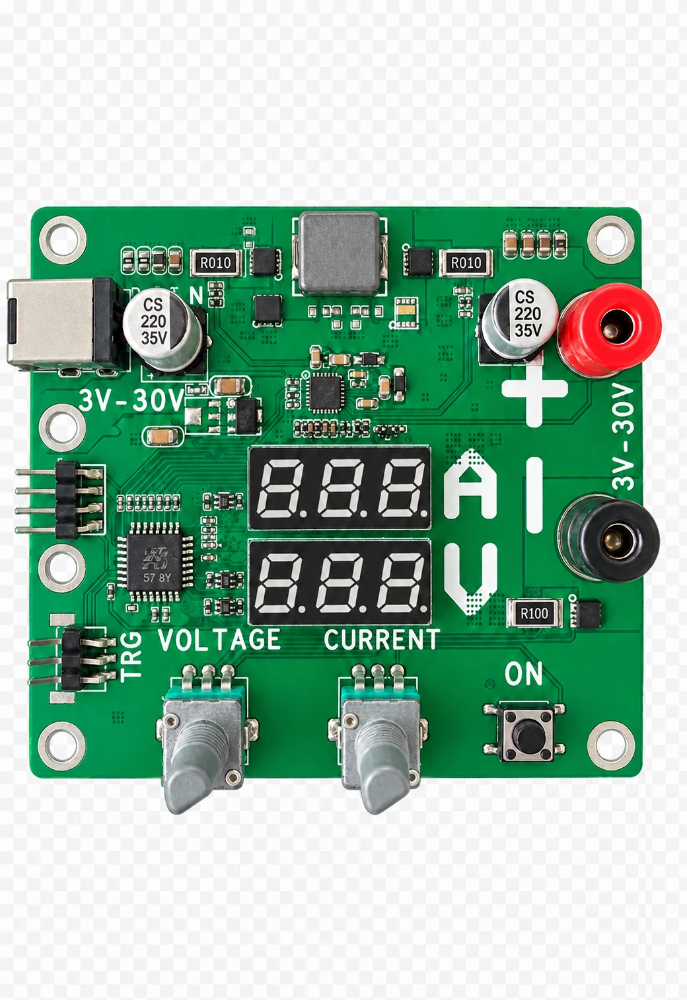

3–30V 可调输出
PCB 丝印标明其标称输出调节范围为 3V 至 30V。
可调直流电源
一款开源数字控制直流电源模块，具有独立电压和电流调节、双数码显示、输出端子以及独立输出开关。

PCB 丝印标明其标称输出调节范围为 3V 至 30V。
两个旋转编码器分别用于直接调节电压和电流设定。
两个三位数码管可同时显示电压和电流信息。
独立 ON 按键可从面板启用或关闭直流输出。
红黑接线柱提供标识清晰的正负直流输出连接。
标记为 TRG 的排针可用于触发或控制接口实验。
项目资料包含原理图、PCB、BOM、Gerber、钻孔及机械参考文件。
最大电流、输出功率、稳压精度及保护行为需完成公开台架测试后再标注。
电源电子
开源文件